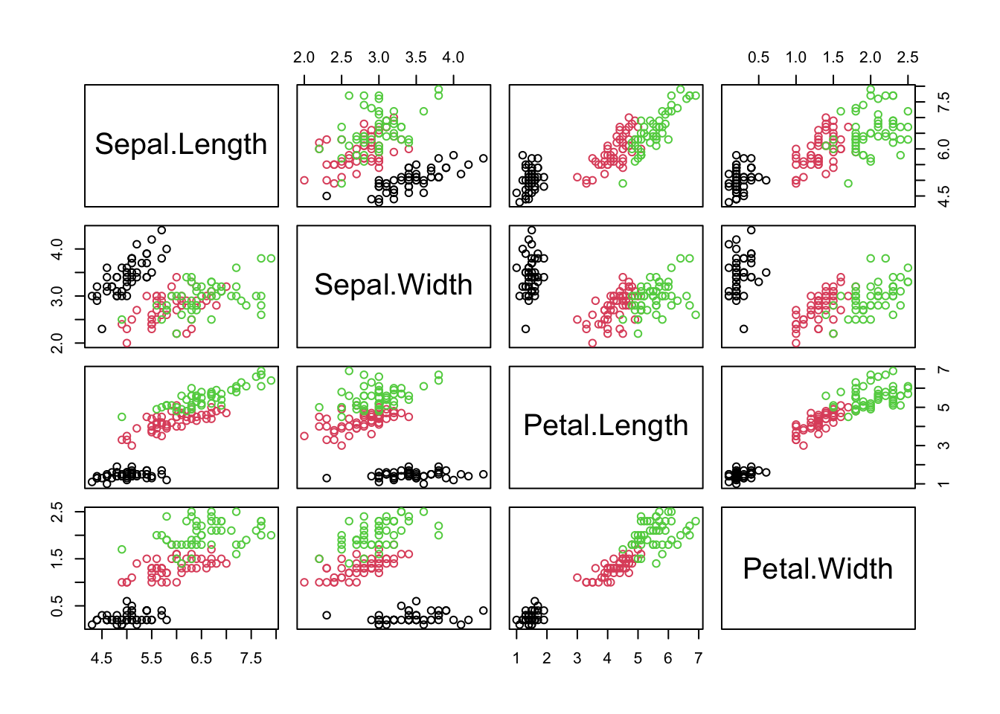
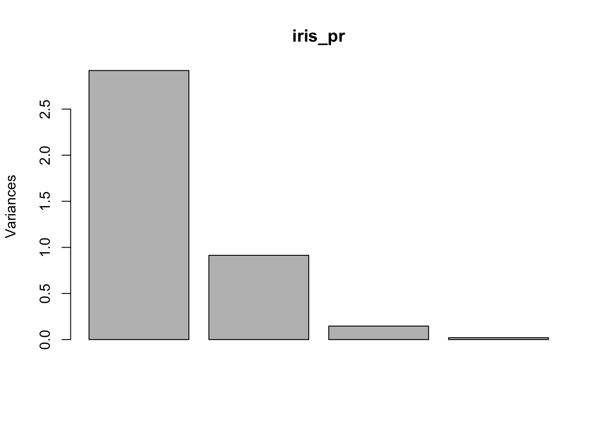
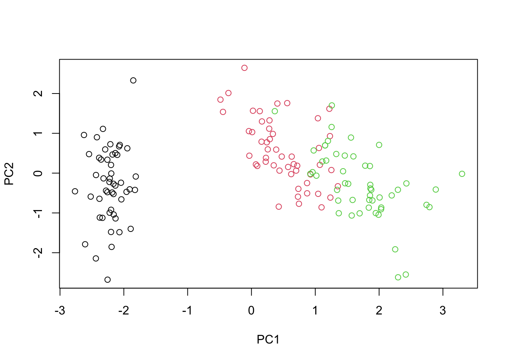
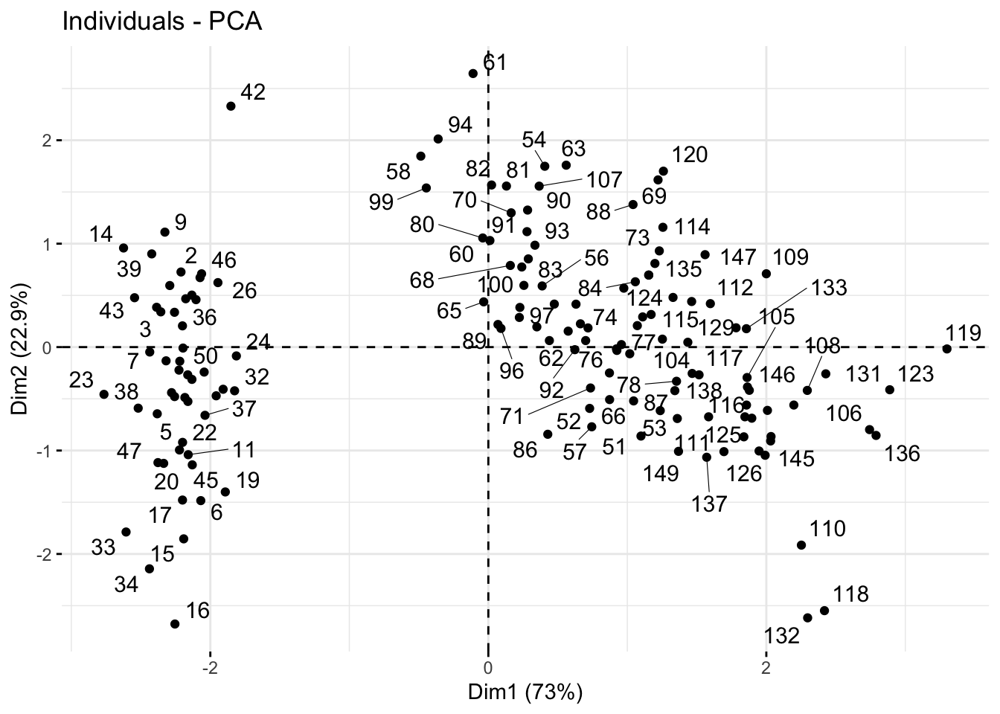
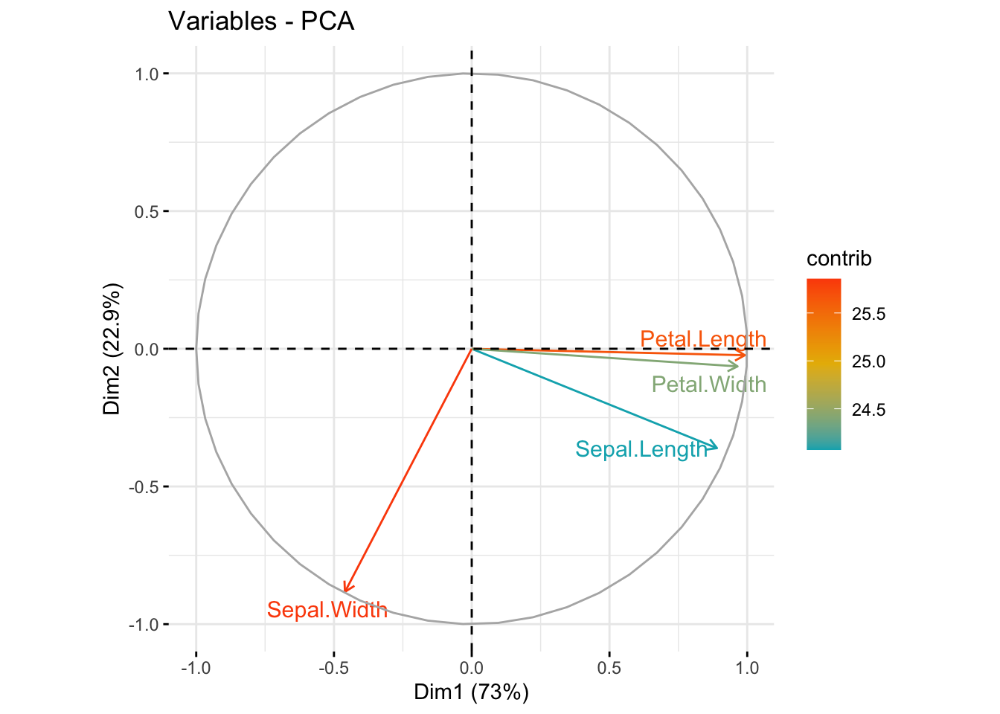
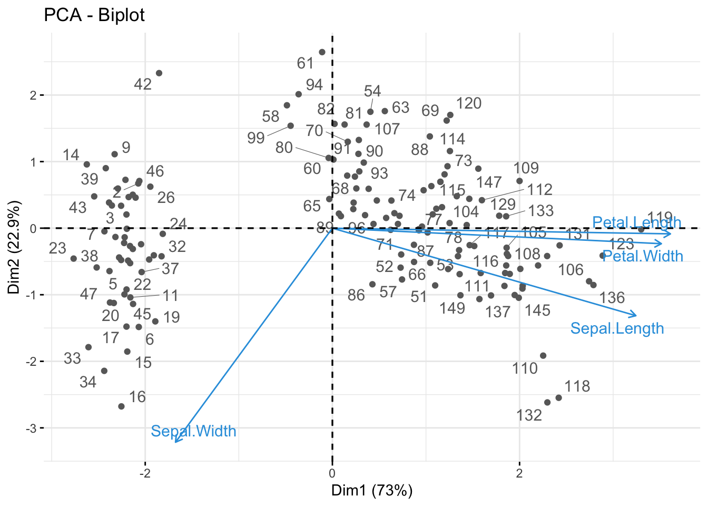
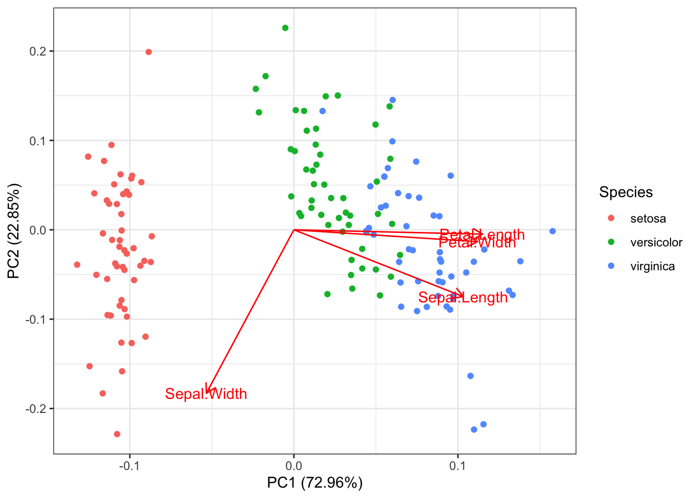
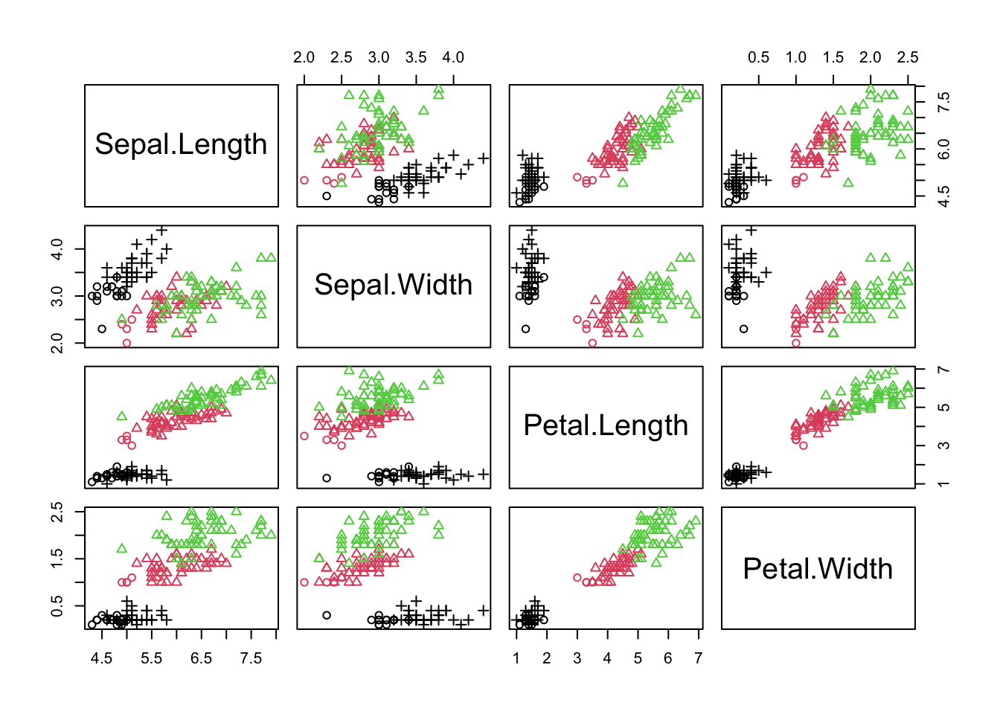

21 Многомерные методы анализа данных
Сегодняшнее занятие будет посвящено многомерным методам анализа данных - методам работы с данными, в которых много колонок. Мы уже сталкивались с некоторыми многомерными методами, такими как множественная линейная регрессия. Поэтому вы знаете, что многомерность создает новые проблемы. Например, при множественных корреляциях или попарных сравнениях возникает проблема множественных сравнений, а при использовании множественной регрессии лишние предикторы могут ловить только шум и приводить к переобучению (если говорить в терминах машинного обучения). Короче говоря, больше - не значит лучше. Нужно четко понимать, зачем мы используем данные и что пытаемся измерить.
Однако в некоторых случаях мы в принципе не можем ничего интересного сделать с маленьким набором переменных. Много ли мы можем измерить личностным тестом с одним единственным вопросом? Можем ли мы точно оценить уровень интеллекта по успешности выполнения одного единственного задания? Очевидно, что нет. Более того, даже концепция интеллекта в современном его представлении появилась во многом благодаря разработке многомерных методов анализа! Ну или наоборот: исследования интеллекта подстегнули развитие многомерных методов.
21.1 Анализ главных компонент
21.2 Анализ главных компонент (Principal component analysis)
Анализ главных компонент (АГК) известен как метод “уменьшения размерности.” Представьте многомерное пространство, где каждая колонка — это отдельная ось, а каждая строка задает координаты одной точки в этом пространстве. Мы получим многомерную диаграмму рассеяния.
Многомерную диаграмму рассеяния, к сожалению, нельзя нарисовать, поэтому нарисуем несколько двухмерных диаграмм рассеяния для отображения сочетания всех колонок набора данных iris со всеми.
plot(iris %>% select(!Species), col=iris$Species)
Суть АГК в том, чтобы повернуть оси этого пространства таким образом, чтобы первые оси объясняли как можно больший разброс данных, а последние - как можно меньший. Тогда мы могли бы отбросить последние оси и не очень-то многое потерять в данных.
Для двух осей это выглядит вот так:

Первая ось должна минимизировать красные расстояния. Вторая ось будет просто перпендикулярна первой оси.
Математически, АГК - это нахождение собственных векторов и собственных значений матрицы корреляций или ковариаций. Собственные вектора - это такие особенные вектора матрицы, умножив которые на данную матрицу, можно получить тот же самый вектор (т.е. того же направления), но другой длины. А вот коэффициент множителя длины нового вектора - это собственное значение. В контексте АГК, собственные вектора - это новые оси (т.е. те самые новые компоненты), а собственные значения - это размер объясняемой дисперсии с помощью новых осей. Собственные вектора, ранжированные по их собственным значениям от большего к меньшему, — это и есть главные компоненты в искомом порядке.
Итак, для начала нам нужно центрировать и нормировать данные - вычесть среднее и поделить на стандартное отклонение, т.е. посчитать z-оценки (@ref(z_scores)). Это нужно для того, чтобы сделать все шкалы равноценными. Это особенно важно делать когда разные шкалы используют несопоставимые единицы измерения. Скажем, одна колонка - это масса человека в килограммах, а другая - рост в метрах. Если применять АГК на этих данных, то ничего хорошего не выйдет: вклад роста будет слишком маленьким. А вот если мы сделаем z-преобразование, то приведем и вес, и рост к “общему знаменателю.”
В базовом R уже есть инструменты для АГК princomp() и prcomp(), считают они немного по-разному. Возьмем более рекомендуемый вариант, prcomp(). Эта функция умеет самостоятельно поводить z-преобразования, для чего нужно поставить center = TRUE и scale. = TRUE.
iris_pr <- iris %>%
select(!Species) %>%
prcomp(center = TRUE, scale. = TRUE)Уже много раз встречавшаяся нам функция summary(), примененная на результат проведения АГК, выдаст информацию о полученных компонентах. Наибольший интерес представляют строчки “Proportion of Variance” и “Cumulative Proportion,” которые показывают долю дисперсию, объясненную компонентной, и кумулятивную долю объясненной дисперсии.
summary(iris_pr)## Importance of components:
## PC1 PC2 PC3 PC4
## Standard deviation 1.7084 0.9560 0.38309 0.14393
## Proportion of Variance 0.7296 0.2285 0.03669 0.00518
## Cumulative Proportion 0.7296 0.9581 0.99482 1.00000Функция plot() повзоляет визуализировать соотношение разных компонент.
plot(iris_pr)
Как мы видим, первый компонент объясняет большую часть дисперсии, второй компонент заметно меньше, остальные два практически не имеют влияния, то есть, скорее всего, они репрезентируют некоторый шум в данных.
Теперь мы можем визуализировать первые два компонента. Это можно сделать с помощью базовых инструментов R.
plot(iris_pr$x[,1:2], col=iris$Species)
Однако пакет {factoextra} представляет гораздо более широкие возможности для визуализации.
install.packages("factoextra")library(factoextra)
fviz_pca_ind(iris_pr,
gradient.cols = c("#00AFBB", "#E7B800", "#FC4E07"),
repel = TRUE # Avoid text overlapping
)
fviz_pca_var(iris_pr,
col.var = "contrib", # Color by contributions to the PC
gradient.cols = c("#00AFBB", "#E7B800", "#FC4E07"),
repel = TRUE # Avoid text overlapping
)
fviz_pca_biplot(iris_pr, repel = TRUE,
col.var = "#2E9FDF", # Variables color
col.ind = "#696969" # Individuals color
)
library(ggfortify)
autoplot(iris_pr, data = iris, colour = "Species", loadings = TRUE, loadings.label = TRUE) +
theme_bw()
21.3 tSNE
21.4 Эксплораторный факторный анализ
21.5 Конфирматорный факторный анализ
21.6 Кластерный анализ
iris_3means <- kmeans(iris %>% select(!Species), centers = 3)
table(iris$Species, iris_3means$cluster)##
## 1 2 3
## setosa 17 0 33
## versicolor 4 46 0
## virginica 0 50 0plot(iris %>% select(!Species), col = iris$Species, pch = iris_3means$cluster)